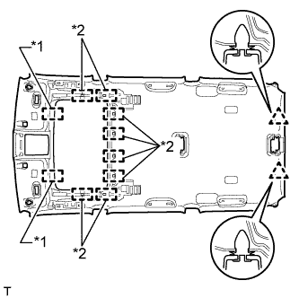
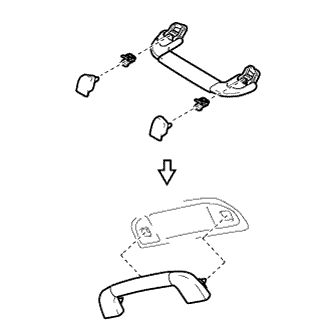

ROOF HEADLINING > INSTALLATION |
| 1. INSTALL DECK SIDE TRIM COVER LH |
Attach the 3 claws and 2 guides to install the deck side trim cover.
| 2. INSTALL QUARTER TRIM JACK COVER |
Attach the 3 claws and 2 guides to install the quarter trim jack cover.
| 3. INSTALL QUARTER TRIM COVER |
Attach the 2 claws to install the quarter trim cover.
| 4. INSTALL REAR SEAT SHOULDER BELT HANGER LH |
Attach the claw and guide to install the rear seat shoulder belt hanger.
| 5. INSTALL REAR SEAT SHOULDER BELT HANGER RH |
| 6. INSTALL REAR SHOULDER BELT ANCHOR PLATE SUB-ASSEMBLY LH |
Attach the 6 claws to install the rear shoulder belt anchor plate.
| 7. INSTALL REAR SHOULDER BELT ANCHOR PLATE SUB-ASSEMBLY RH |
| 8. INSTALL FRONT SHOULDER BELT ANCHOR PLATE SUB-ASSEMBLY LH |
Attach the 5 claws to install the front shoulder belt anchor plate.
| 9. INSTALL FRONT SHOULDER BELT ANCHOR PLATE SUB-ASSEMBLY RH |
| 10. INSTALL ROOF HEADLINING ASSEMBLY |
Place the roof headlining into the vehicle through the back door.
Connect the antenna cord connector.
|  |
Attach the 2 clips, 2 guides and 8 fasteners to install the roof headlining.
| *1 | Guide |
| *2 | Fastener |
Connect the connector and attach the 3 clamps to the rear pillar RH.
Connect the 2 connectors and attach the clamp to the rear pillar LH.
Connect the 2 connectors and attach the 3 clamps to the front pillar RH.
Install the bolt.
Connect the 2 connectors and attach the 3 clamps to the front pillar LH.
Connect the drive gear connector.
Connect the rain sensor connector.
Connect the inner mirror connector.
| 11. INSTALL NO. 1 ROOF SIDE RAIL GARNISH LH |
Install 3 new clips to the No. 1 roof side rail garnish.
| *1 | New Clip |
Attach the 3 clips to install the No. 1 roof side rail garnish.
| 12. INSTALL NO. 1 ROOF SIDE RAIL GARNISH RH |
| 13. INSTALL REAR SIDE NO. 1 AIR DUCT |
Insert the upper part of the duct into the roof side duct and, using that point as a pivot point, swing the duct into place and install it to the rear cooling unit.
Attach the 2 claws to install the cooler plate.
| 14. INSTALL NO. 1 ROOM LIGHT ASSEMBLY |
for Center:
Install the No. 1 room light assembly (Click here).
for Rear:
Install the No. 1 room light assembly (Click here).
| 15. INSTALL INNER REAR VIEW MIRROR STAY HOLDER COVER |
 |
Attach the 2 claws.
 |
Attach the 2 claws as shown in the illustration to install the inner rear view mirror stay holder cover.
| 16. INSTALL RAIN SENSOR COVER |
Attach the 2 claws to install the rain sensor cover.
| 17. INSTALL MAP LIGHT ASSEMBLY |
Connect the connector.
Attach the 4 clips to install the map light.
| 18. INSTALL VISOR HOLDER |
Attach the 2 claws.
Push in the visor holder to install it.
| 19. INSTALL VISOR ASSEMBLY LH |
Install the visor with the 2 screws.
| 20. INSTALL VISOR ASSEMBLY RH |
| 21. INSTALL VISOR BRACKET COVER |
Attach the 4 claws to install the visor bracket cover.
| 22. INSTALL ASSIST GRIP |
Install the assist grip with the 2 bolts.
Attach the 4 claws to close the 2 covers.
| 23. INSTALL REAR ASSIST GRIP ASSEMBLY LH |
 |
Assemble the assist grip, 2 clips and 2 covers as shown in the illustration.
Install the assist grip.
| 24. INSTALL REAR ASSIST GRIP ASSEMBLY RH |
| 25. INSTALL ASSIST GRIP SUB-ASSEMBLY |
|  |
Assemble the assist grip, 2 clips and 2 covers as shown in the illustration.
Install the assist grip.
| 26. INSTALL REAR QUARTER TRIM PANEL ASSEMBLY LH |
Attach the 4 clips and 2 guides and pass the rear No. 2 seat outer belt floor anchor through the rear quarter trim panel.
Connect the connector.
Attach the 7 clips and 2 guides to install the rear quarter trim panel.
| 27. INSTALL REAR QUARTER TRIM PANEL ASSEMBLY RH |
| 28. INSTALL FRONT QUARTER TRIM PANEL ASSEMBLY LH |
Pass the rear No. 1 seat outer belt floor anchor through the front quarter trim panel.
Attach the 2 clips and 2 guides to install the front quarter trim panel.
| 29. INSTALL FRONT QUARTER TRIM PANEL ASSEMBLY RH |
| 30. INSTALL DECK TRIM SIDE PANEL ASSEMBLY LH |
Connect each connector.
Attach the 3 clips and 8 claws to install the deck trim side panel.
Install the 2 bolts and 2 screws.
Install the rear No. 2 seat outer belt floor anchor with the bolt.
Install the rear No. 1 seat outer belt floor anchor with the bolt.
| 31. INSTALL DECK TRIM SIDE PANEL ASSEMBLY RH |
Connect each connector.
Attach the 3 clips and 8 claws to install the deck trim side panel.
Install the 2 bolts and screw.
Install the rear No. 2 seat outer belt floor anchor with the bolt.
Install the rear No. 1 seat outer belt floor anchor with the bolt.
| 32. INSTALL ASSIST GRIP SUB-ASSEMBLY |
Install the assist grip with the 2 bolts.
| 33. INSTALL ASSIST GRIP PLUG |
Attach the 2 claws to install the assist grip plug.
| 34. INSTALL FRONT DECK SIDE TRIM COVER (w/ Tonneau Cover) |
Attach the 2 claws to install the front deck side trim cover
| 35. INSTALL NO. 1 TONNEAU COVER HOLDER CAP (w/o Tonneau Cover) |
Attach the 2 claws to install the No. 1 tonneau cover holder cap.
| 36. INSTALL NO. 1 LUGGAGE COMPARTMENT TRIM HOOK |
Insert the No. 1 luggage compartment trim hook with the hook oriented horizontally to install it.
| 37. INSTALL REAR NO. 1 SEAT OUTER LAP BELT ANCHOR COVER |
Attach the 3 claws to install the rear No. 1 seat outer lap belt anchor cover.
| 38. INSTALL TONNEAU COVER ASSEMBLY (w/ Tonneau Cover) |
Install the tonneau cover.
| 39. INSTALL CENTER PILLAR GARNISH LH |
Pass the front seat outer belt floor anchor through the center pillar garnish.
Attach the 2 clips and 2 guides to install the center pillar garnish.
Install the bolt.
| 40. INSTALL CENTER PILLAR GARNISH RH |
| 41. INSTALL NO. 2 ASSIST GRIP |
Attach the 2 claws to install the No. 2 assist grip.
Install the 2 bolts.
| 42. INSTALL NO. 2 ASSIST GRIP PLUG LH |
Attach the 2 claws to install the front No. 2 assist grip plug.
| 43. INSTALL NO. 2 ASSIST GRIP PLUG RH |
| 44. INSTALL LOWER CENTER PILLAR GARNISH LH |
Attach the 4 claws and 2 clips to install the lower center pillar garnish.
Install the front seat outer belt floor anchor with the bolt.
| 45. INSTALL LOWER CENTER PILLAR GARNISH RH |
| 46. INSTALL OUTER LAP BELT ANCHOR COVER |
Attach the 3 claws to install the outer lap belt anchor cover
| 47. INSTALL REAR DOOR OPENING TRIM WEATHERSTRIP LH |
 |
Align the paint mark on the rear door opening trim weatherstrip with the mark position on the vehicle and install the rear door opening trim weatherstrip as shown in the illustration.
| *1 | Paint Mark |
| *2 | Mark Position |
| 48. INSTALL REAR DOOR OPENING TRIM WEATHERSTRIP RH |
| 49. INSTALL REAR DOOR SCUFF PLATE LH |
Attach the 3 clips, 6 claws and 2 guides to install the rear door scuff plate.
| 50. INSTALL REAR DOOR SCUFF PLATE RH |
| 51. INSTALL QUARTER SCUFF PLATE LH |
Install the quarter scuff plate with the 2 bolts.
| 52. INSTALL QUARTER SCUFF PLATE RH |
| 53. INSTALL REAR NO. 1 FLOOR STEP COVER |
Attach the 2 claws to install the rear No. 1 floor step cover.
| 54. INSTALL FRONT PILLAR GARNISH LH |
Attach the 3 guides to install the front pillar garnish.
| 55. INSTALL FRONT PILLAR GARNISH RH |
| 56. INSTALL NO. 1 ASSIST GRIP |
Attach the 2 claws to install the No. 1 assist grip.
Install the 2 bolts.
| 57. INSTALL FRONT NO. 1 ASSIST GRIP PLUG LH |
Attach the 2 claws to install the front No. 1 assist grip plug.
| 58. INSTALL FRONT NO. 1 ASSIST GRIP PLUG RH |
| 59. INSTALL FRONT DOOR OPENING TRIM WEATHERSTRIP LH |
 |
Align the paint mark on the front door opening trim weatherstrip with the mark position on the vehicle and install the front door opening trim weatherstrip as shown in the illustration.
| *1 | Paint Mark |
| *2 | Mark Position |
| 60. INSTALL FRONT DOOR OPENING TRIM WEATHERSTRIP RH |
| 61. INSTALL COWL SIDE TRIM BOARD LH |
Attach the clip and claw to install the cowl side trim board.
Install the clip.
| 62. INSTALL COWL SIDE TRIM BOARD RH |
| 63. INSTALL DOOR SCUFF PLATE ASSEMBLY LH |
Connect the connector.
Attach the 4 clips, 10 claws and 2 guides to install the door scuff plate.
| 64. INSTALL DOOR SCUFF PLATE ASSEMBLY RH |
| 65. INSTALL REAR NO. 1 SEAT ASSEMBLY |
for 60/40 Split Slide Walk-in Seat Type LH Side:
Install the rear No. 1 seat assembly (Click here).
for 60/40 Split Slide Walk-in Seat Type RH Side:
Install the rear No. 1 seat assembly (Click here).
| 66. INSTALL REAR NO. 2 SEAT ASSEMBLY |
Install the rear No. 2 seat assembly (Click here).
| 67. CONNECT CABLE TO NEGATIVE BATTERY TERMINAL |